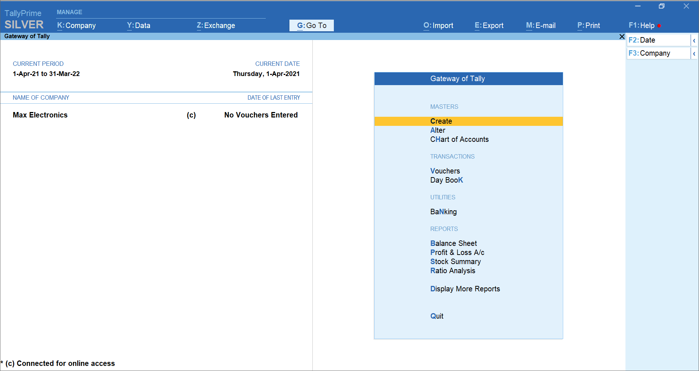

Tally Prime
1
Introduction
1.1
Fecilitators
2
Fundamentals: Company Creation
2.1
Creating a Company
2.1.1
Steps
2.1.2
Example
2.2
Company Features and Statutory Details
2.3
Enable Statutory & Taxation
2.4
Currency Symbol Setup
2.5
Maintaining Accounts
2.6
Selection, Closure, and Alteration of Company
2.6.1
Selecting a Company
2.6.2
Altering Company Information
2.6.3
Closing a Company
2.7
Backup and Security (Recommended)
2.8
Summary
3
Chart of Accounts: Groups & Ledgers
3.1
Overview — Concepts
3.2
Typical Group hierarchy (example)
3.2.1
Creating a Primary Group (Step-by-step)
3.2.2
Creating a Sub-Group
3.2.3
Creating a Single Ledger (Step-by-step)
3.3
Alteration (Modify) of Groups and Ledgers
3.3.1
To Alter a Group
3.3.2
To Alter a Ledger
3.4
Deletion of Ledgers and Groups
3.4.1
To Delete a Ledger
3.4.2
To Delete a Group
3.5
Examples: Typical Ledgers and Groups
3.5.1
Example Chart for a Small Business
4
Accounting Vouchers — Types
4.1
Shortcuts used in steps
5
1. Contra Voucher (Transfer between Cash/Bank)
5.0.1
Steps (Contra)
5.0.2
Example
5.0.3
Tip
6
2. Payment Voucher
6.0.1
Steps (Payment)
6.0.2
Example
6.0.3
Tip
7
3. Receipt Voucher
7.0.1
Steps (Receipt)
7.0.2
Example
7.0.3
Tip
8
4. Journal Voucher
8.0.1
Steps (Journal)
8.0.2
Example
8.0.3
Tip
9
5. Sales Voucher (Invoice / Sales Entry)
9.0.1
Steps (Sales)
9.0.2
Example (Taxable sale)
9.0.3
Tip
10
6. Purchase Voucher
10.0.1
Steps (Purchase)
10.0.2
Example
10.0.3
Tip
11
7. Credit Note (Sales Return / Credit Memo)
11.0.1
Steps (Credit Note)
11.0.2
Example
11.0.3
Tip
12
8. Debit Note (Purchase Return / Debit Memo)
12.0.1
Steps (Debit Note)
12.0.2
Example
13
Additional Practical Notes
13.1
Bill-wise details for credit transactions
13.2
Voucher numbering & series
13.3
Using Narration and References
13.4
Reverse / Adjust Transactions
14
Sample Vouchers: A Small Use-Case Walkthrough
15
Troubleshooting & Common Issues
16
Example Payment Voucher Entry Screen
17
Quick Reference Table — Voucher Types
18
Final Tips
Published with bookdown
ACCOUNTING SOFTWARE
16
Example Payment Voucher Entry Screen

Example Payment Voucher entry screen
Figure: Example Payment Voucher entry screen.